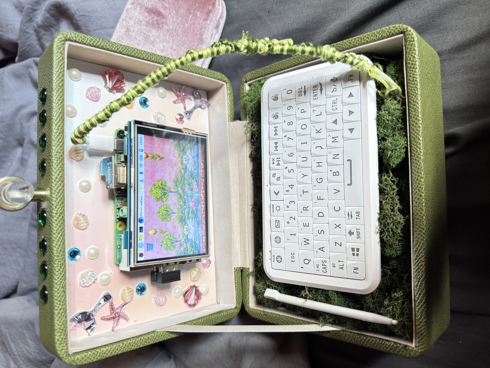

01
Raspberry Pi Cyberdeck
Building a custom Raspberry Pi 5 cyberdeck and creating my own game specifically for it. I'm designing the interface around the 3.5" touchscreen and experimenting with interactive controls, simple game mechanics, and an underwater-inspired theme to make the device feel like something I built from scratch.
